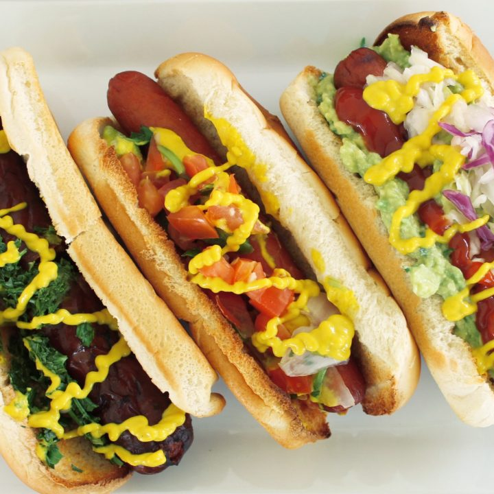

4 panes especiales para shuco (pan francés suave o tipo hot dog, pero alargado)
4 salchichas (de res, pollo o chorizo parrillero, según tu gusto)
1 aguacate maduro (para hacer guacamol)
1 tomate maduro
½ cebolla blanca
Repollo finamente picado y ligeramente sancochado
Mayonesa al gusto
Mostaza al gusto
Ketchup al gusto
Salsa picante (opcional, tipo chiltepe)
Sal y pimienta al gusto
Preparación:
El pan: Ábrelo a lo largo, sin separar completamente las dos mitades.
El guacamol: Machaca el aguacate con un poquito de sal, tomate y cebolla picada finamente.
Las salchichas o chorizos: Ásalos o fríelos hasta que estén bien doraditos.
El repollo: Ponlo a hervir 2 minutos en agua con sal, escúrrelo y resérvalo.
Armar el shuco:
Unta el pan con guacamol.
Coloca la salchicha.
Agrega el repollo encima.
Añade mayonesa, mostaza, ketchup y si quieres salsa picante.
👉 ¡Y listo! Ya tienes tu shuco chapín, el verdadero hot dog callejero guatemalteco. 😋
